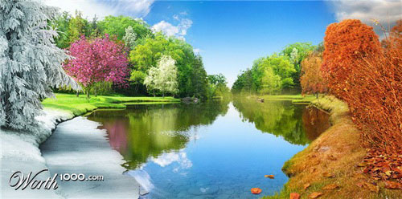

What can I do in Montana?
This website is made for the purpose of helping people explore Montana! The tabs at the top allow you to search by season, to find your favorite activities year round. Montana is home to come of the most beautiful land and wildlife, so exploring 365 days a year is easy! Spring season is one of the most beautiful times of year, and a time in which warm weather starts to roll in, and summer activities start. Things like golfing, hiking and fishing allow you to enjoy the outdoors as weather warms up. Summer is a time of year when boating is non-stop. Wake surfing has every lake in Montana full, while tubing on the endless rivers gives you some peace and quiet away from the motors. Summer is also the most beautiful time to explore national parks like Yellowstone and Glacier. Fall is when the cool weather starts to roll in, and winter activities start up. Seasonal activities like corn maze's keep the fmaily happy, while mountain biking and rock climbing are enjoyable in cooler weather. Montana's most famous sport kicks off in the fall. Hunting consumes the lives of Montana residents, while also dragging in out-of-stater's to get that trophy elk. Then comes the time of year that everyone complains about... winter. Winter may be cold, but the amount of winter activities avalible make up for the cold weather. Sports like ice fishing, snowshoeing, and snowmobiling are once in a life time experiences here in Montana. Skiing also consumes the state with ski resorts like Whitefish, Big Sky and Showdown being hot spots for amazing snow. And of course everyone wants to warm up after a long day of skiing, so the hotsprings are wildly popular in the winter. Explore around and find some fun things to do in Montana!
But don't forget! While you're here, check out your favorite sports teams in Montana. Follow Carroll College Athletics using the links to the left!